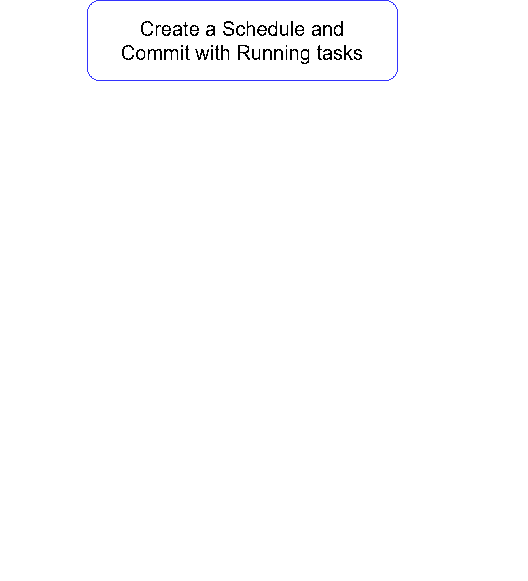
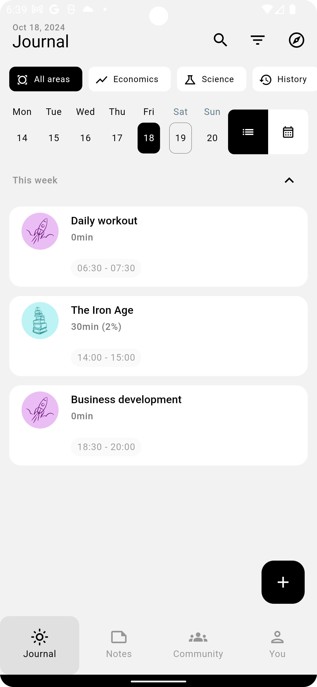
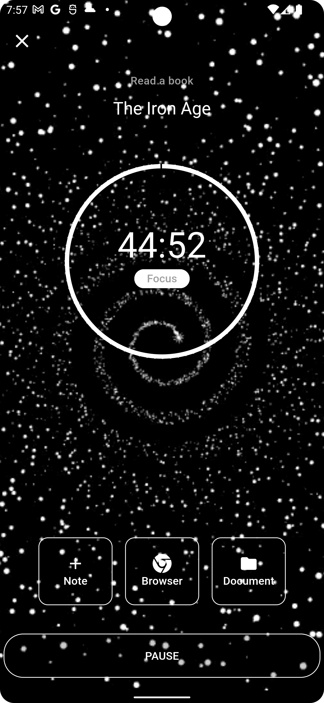
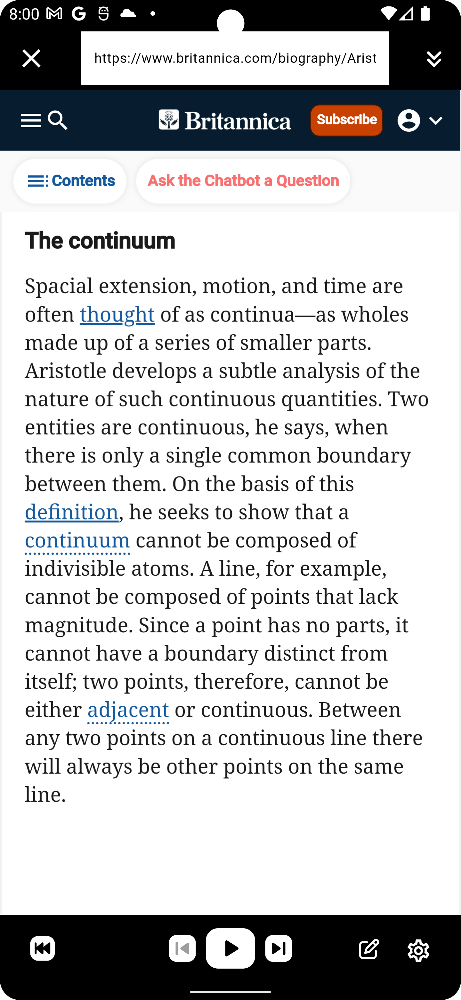
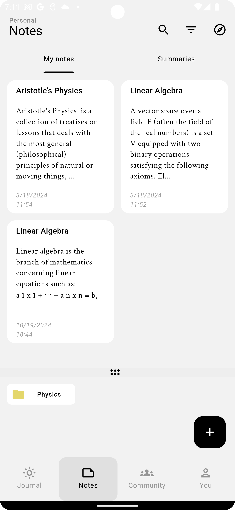
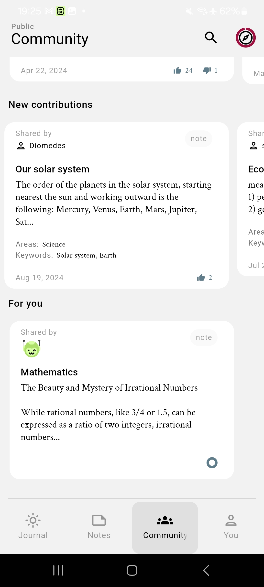

Plany is a planning application that helps you in creating flexible and multi-task plans that best match your daily life tasks, as well as your learning or studying goals.
You can :
The main functions are illustrated below:

To create a goal (or schedule), you should provide:
(*) Some additional information may be needed, according to your goal specific needs.
There are two categories of goals:
- Timed goals: Goals requiring a given amount of time to be accomplished (e.g. a study) .
- Repetition goals: Goals not limited by a certain time or period, but done regularly or repeated over time (e.g. a new habit).
To get notified about the goal coming tasks:
- Please ensure that the notifications are allowed on your device for the
Planyapplication.
The application will ask you to allow notifications when needed.
The journal view contains the user daily tasks. It has two variants:
Journal:

For each goal, you can create a summary. These summaries can be shared with the community or friends.
There are 3 options to create a summary:
There is a size limit for summaries and notes created by users:
5.000 characters50.000 charactersTIMER to start and register your session.Running a session:

You can listen (audio reading) to files (pdf, microsoft docx, md or text files), You can also listen to web pages content via the integrated browser.
Audio listening to a web page:

You have the possibility to adapt the audio settings (TTS engine, language...etc) for the read fil or web page.
Note:For webpages, the audio controls are available only after the page content is loaded.
In this view, you can consult, search, edit, or organize in folders your notes and summaries. Or share chosen notes or summaries with the Community. To move a note or summary into a folder, simply drag and drop the note (or summary) inside the desired folder.
Notes:

The Community view contains the contributions of the Community, mainly the ones matching your keywords, areas and centers of interests. It contains also your groups and their content and news.
You get here also regular suggestions from the application, based on your favorite topics and centers of interest.
Community:

The Profile view contains the following:
Every user can create groups on the cloud. The other users can then join this group. The group members can then share content with each other within the group (the shared content is accessible only for group members).
The group owner can manage the group settings. Accept or decline users requests to join the group. Or delete members from the group.
At any time, you can upload a backup of your goals and application data on your Google Drive storage.
You can later download this backup on the same device (be aware that this will erase the actual application data). Or download this backup on another device.
You can upload your content (summaries, folders with various notes & summaries) to your Google Drive.
You can save your content (summaries, folders with various notes & summaries) in your local device.
Upgraded users have access to advanced application themes.
When the end time (goal limit date or the number of occurrences) of a goal is expired, then the goal is marked as expired.
Then the goal is archived as follow:
You can pause a goal for a given period. You can then resume it later on.
Paused goals will have their notifications suspended during the pause period.
You can terminate a goal, even if not yet completely finished.
For timed goals, when the progress is >= 75%, then the user has the possibility to restart the goal from the beginning.
You can copy a goal. Note that only the goal properties are copied. The run history, notes and statistics are not copied.
Every goal SHOULD have at least one associated area.
There is a list of provided areas (e.g. Economy, Arts...etc). You can also create your own custom areas.
Long press on an area to move it and reorder your areas.
You can use filters to show only goals matching a given criteria. You can also filter goals by area.
The application is available with the following translations:
(Play Store) https://play.google.com/store/apps/details?id=ch.baker.planner
(App Store) https://itunes.apple.com/app/id6470530541